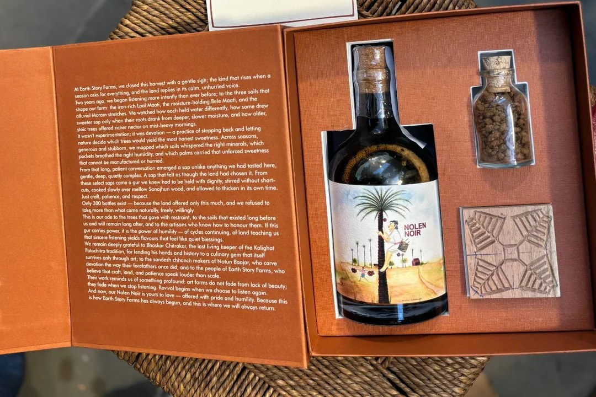
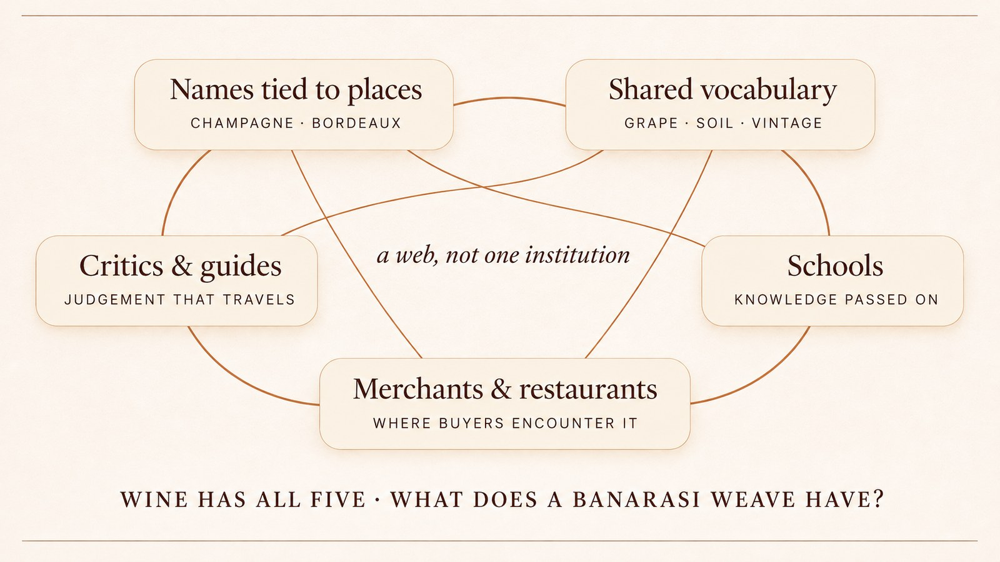

Recognition Is Not Value
822 GI tags, a book about Kolkata's kitchens, and the loop that keeps makers poor.

At the AD Design Show in BKC this November, I spent a long time holding a book about Kolkata.
KOLKATA: The People, Kitchens & Streets of the City, by Heirloom Cities. It tells a city through what it eats — home kitchens, street carts, the old institutions, the small rituals of a neighbourhood. I kept turning pages — a photograph, then a paragraph, then another photograph. It’s heavy and carefully made, the kind of book somebody clearly fought to get right, and I didn’t want to put it down.
Then I thought: this is the thing I complained about not seeing.
In the last piece I asked who gets to define taste, and why some cultures have guides and critics whose judgements travel. Here was a piece of that missing layer, in my hands. Not a ministry scheme. A small publisher deciding a city’s kitchens deserved a book.
But a good book, a protected name and a reputation are three different things. Which of them makes a maker’s work worth more? And to whom?
How a system of taste gets built
Wine is the finished example, because you can see all the parts working.
Names attached to places: Champagne, Barolo. A shared way of describing grapes, soils, methods and vintages, so two strangers can argue precisely. Critics who move prices. Schools that teach the vocabulary. Merchants and restaurants that make the distinctions matter at the moment of buying. And plenty of disagreement inside all of it.
It isn’t one institution handing down the truth. It’s a web, and the web is what turns a drink into a culture, and a culture into a market where one hillside sells for ten times the next.
What would that look like around a Banarasi weave, a regional sweet, a variety of rice? And which pieces already exist?

The GI tag: a start, mistaken for a finish
India’s answer to the appellation is the Geographical Indication tag. By March 2026 we had registered 822 of them, 350 for handicrafts and 257 for agricultural produce, and the pace is picking up: 452 in the last five financial years against 109 in the five before. Darjeeling tea, Chanderi saris, Pochampally ikat.
In a few cases the tag has done what it promises. Kalanamak rice, from eastern Uttar Pradesh, is the good story: after registration, local authorities reported the area under cultivation rising more than six-fold between 2018 and 2024, and the number of farmers growing it nearly eight-fold. How much of that the tag caused, nobody has shown yet.
And read the fine print. A GI is a collective designation, not a brand anyone owns; producers have to register as authorised users to benefit, and that participation is concentrated in a few products and a few states. For most of the 822, the evidence on exports, incomes or jobs is thin. The tag exists. The value doesn’t follow by itself.
Recognition is an input. Value is an outcome, and it has to be built. Not the worth of the craft, which is already there, but the money: enough to pay a maker to refine the work, try something new, and keep the tradition moving.
We haven’t built nothing
The easy complaint is that India has the crafts and none of the surrounding institutions. It isn’t true, and I came close to saying it in the last piece.
Dastkar has spent decades on design, training and market access for craftspeople. The Crafts Council of India has done the same for artisan livelihoods and promotion. The Indian Institute of Crafts & Design in Jaipur trains people to work where craft meets design. There are museums, galleries, fairs and archives doing pieces of this work.
And at the small end, people are building the missing pieces without waiting for anyone. Earth Story Farms, whose Nolen Noir I wrote about last time, works with more than eighty jaggery makers in Bankura and treats a season’s gur the way a Burgundy négociant treats a vintage; Kwidi and Amar Khamar are doing versions of the same thing. Bombay Sweet Shop treats the Indian sweet as a category with a grammar you can play inside. Heirloom Cities made the book I was holding. And walk through any decent grocer and notice what people now pay for oil with “wood-pressed” on the label. Nobody taught Indian shoppers to want provenance. They started wanting it on their own.
Each of these is one tile. None is the mosaic. The gap, then, isn’t that nothing exists. It’s that the pieces don’t connect, and that the makers who most need them often can’t reach them.
One more signal. The Ministry of Culture has set up a creative-economy division and published a map of what counts: crafts, design, performing arts, film, publishing, heritage, festivals, and “any field where creative skill and cultural knowledge create value”. It’s a good list. Every line is about the people who make things. Not one line is about the people who explain them.
The difficult loop
Picture a craftsperson doing good work and earning barely enough to run a household. How much time and money can they put into better tools, a new design, documenting their method, reaching a different customer?
Maybe better work and better presentation would bring buyers who pay more. Or maybe it takes better margins first, before anyone can afford to refine anything. The answer probably differs by product, but the loop is real either way: low returns make refinement hard, and without refinement the returns stay low.
There’s a second problem on top. Making something well and running a business are different skills. Someone has to understand pricing, distribution, working capital and the customer. We can’t expect every accomplished craftsperson to be equally good at all of that, and we shouldn’t have to.
Which is why I keep coming back to the layer around the maker. The educator, the curator, the business partner, the producer collective, the critic, the institution that helps a buyer tell one thing from another. A healthy system lets people specialise and still thrive.
The test isn’t how many tags or fairs we can count. It’s whether a maker can do better work, find people willing to pay for it, earn a steadier living, and have room to try again.
The question after recognition
Make a textile legible to the world and you can create demand for it. But who handles the export orders? Who owns the brand? Who keeps the customer relationship? Who decides what counts as an authentic variation? And what share of the premium stays with the people whose knowledge made it possible?
That’s the danger hidden inside the opportunity, and it’s the next piece.